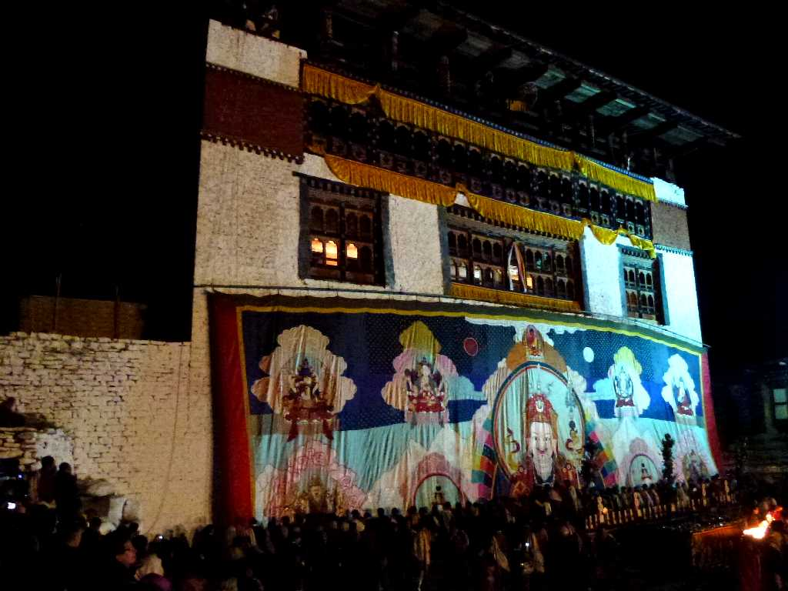
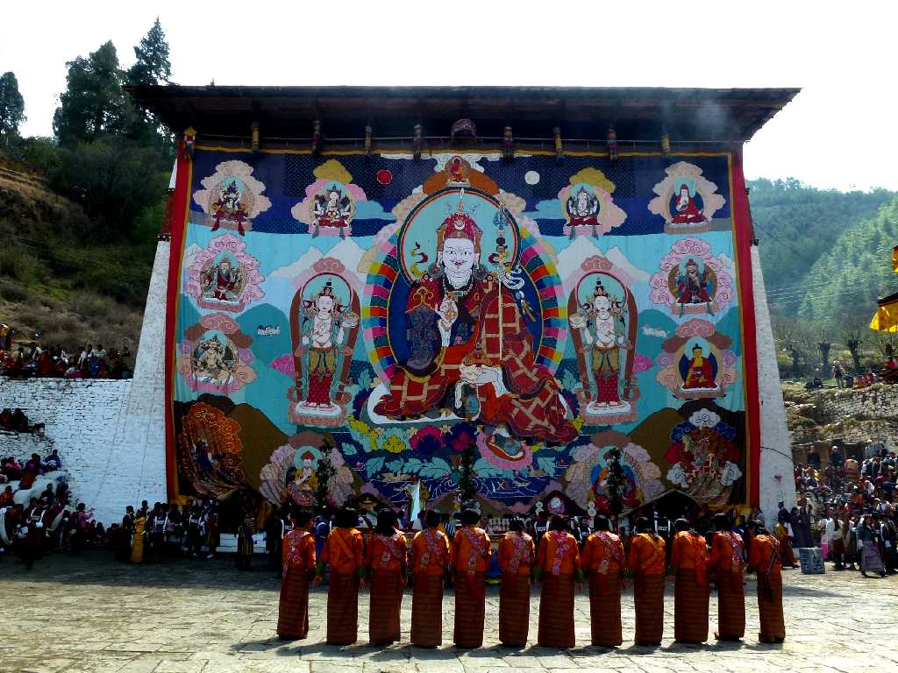
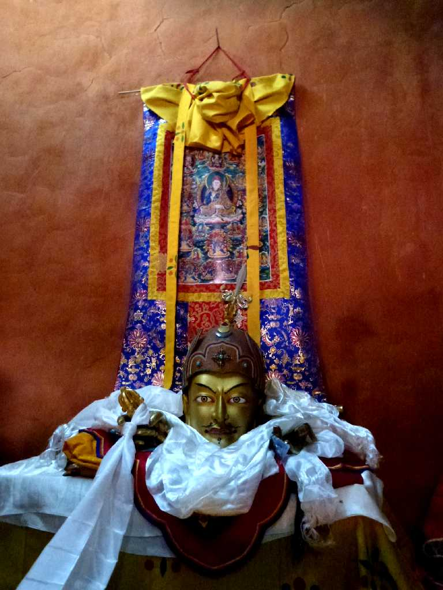
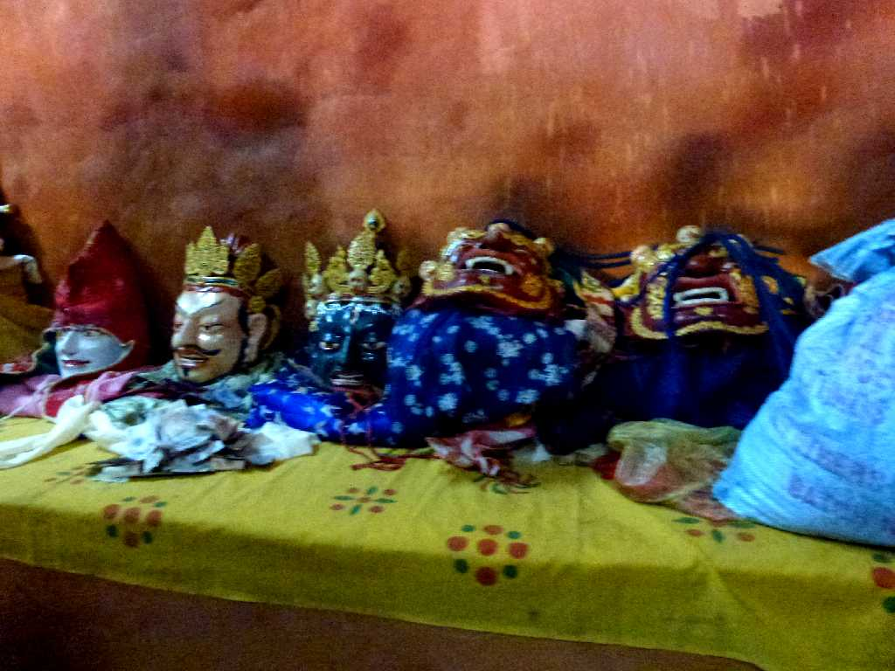
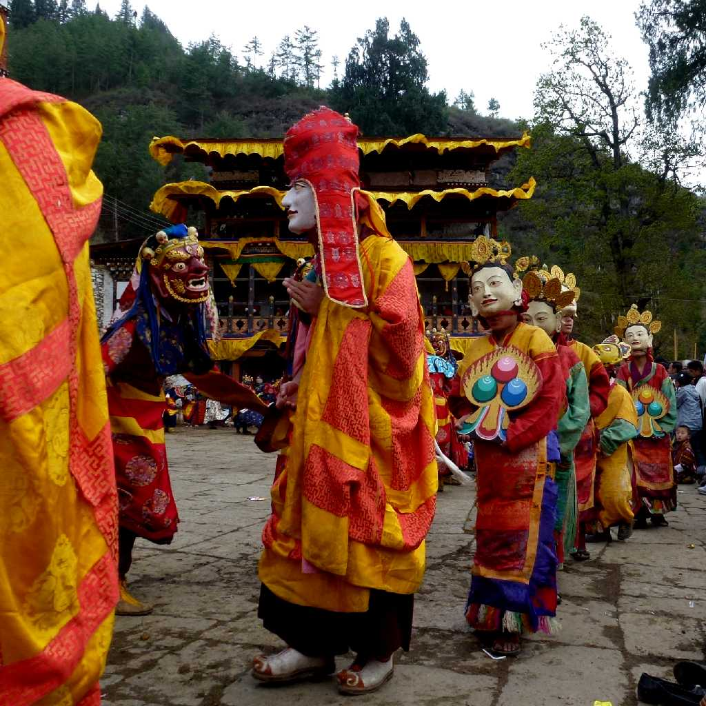
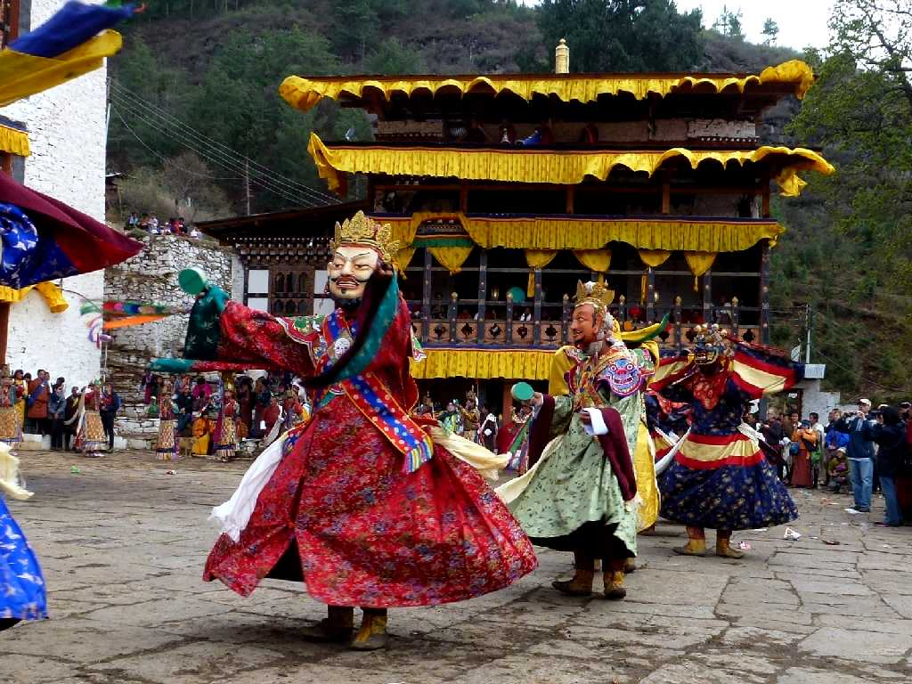
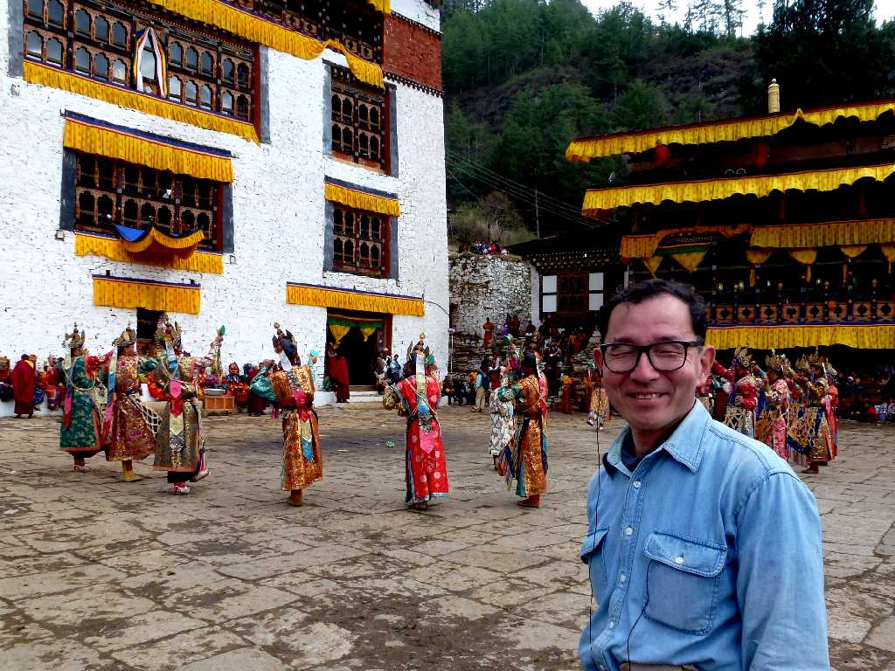

April 6 2012 4:15 Tsechu Festival Paro Zong Paro
ブータン最大のお祭りと云われるパロのツェチュ祭り の最終日はパロゾンにあるトンドルと呼ばれる布に画かれた大仏画の御開帳で始まる

Thongdrel Tsechu Festival Paro Dzong
御開帳されたブータン最大のトンドルで横３０ｍ縦２０ｍもある 中央にバドマサンバヴァ両脇に二妃周囲に八変化相が画かれている このトンドルを観るだけで解脱できると云われている
 


Masked Dances
ツェチュとは旧暦の月の十日を意味しパドマサンバヴァが各月の十日に起こした出来事をしのぶ大法要が行われる仏教行事で法要後仮面踊りが始まる

April 6 2012 Tsechu Festival